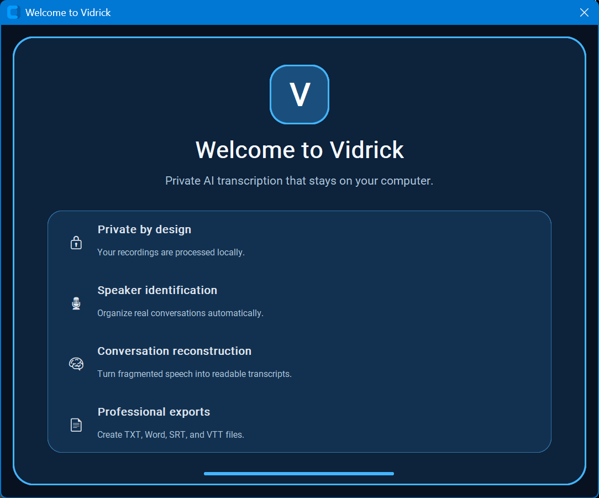

Your recordings stay yours
Audio and video are processed on your Windows computer instead of being uploaded to a transcription service.
Transcribe audio and video directly on your Windows PC. No cloud uploads. No external AI servers. Just private, local transcription with automatic speaker separation and clean, readable results.

When Vidrick opens for the first time, the welcome screen highlights the core experience: private local processing, speaker identification, conversation reconstruction, and professional export options.

Choose your file, language, output format, and speaker count, then let Vidrick process it locally. Professional users can use compatible NVIDIA GPUs for dramatically faster transcription.
Vidrick turns raw speech into organized, readable conversations and saves the formats you choose. Your recordings and transcript workflow stay on your computer.
Review completed transcripts, make corrections, and save the finished version without sending your conversation to another service.

Pull the important information out of a transcript with structured summaries, key points, action items, owners, and deadlines — inside the same private desktop workflow.

Quickly find recent jobs, see how they were processed, and jump back to source files and output folders from your local history.

See your installed version, check for updates, review privacy information, and learn what powers Vidrick — all from inside the app.

Audio and video are processed on your Windows computer instead of being uploaded to a transcription service.
Automatic offline speaker diarization separates conversations into clear, organized speakers.
Professional unlocks GPU/CUDA processing on compatible NVIDIA hardware for much faster transcription.
Export TXT and DOCX transcripts or create SRT and VTT subtitle files from the same workflow.
Speaker 1: Yeah... Well... I think— Speaker 1: we should probably... Speaker 2: Okay.
Speaker 1:
Yeah, I think we should probably move forward.
Speaker 2:
Okay.
Version 4.2 closes two short-conversation evidence gaps found in a confirmed three-person recording. The supplied 3:58 sample now resolves to exactly three identities instead of five, while the validated long-recording workflow remains untouched.
The reported four-minute panel now keeps Tom, Samir, and Will as three consistent identities instead of introducing Speaker 4 and Speaker 5.
Four-to-six-second residual identities are divided into two independent acoustic windows so a decisive repeated voice match is not missed.
The short-recording audit now scales conservatively with recording length, covering the confirmed 18.56-second split without forcing a speaker count.
The correction stops below 20 minutes. The validated 20-minute-and-longer pipeline and every established threshold remain unchanged.
Residual identities are compared against sustained speaker prototypes and merge only when repeated acoustic evidence supports the same voice.
Automatic mode preserves genuinely distinct brief participants when their acoustic evidence differs from established voices.
All transcription, speaker identification, conversation reconstruction, insights, and exports continue to run on your Windows PC — your recordings stay yours.
Still private by design. Transcription and speaker processing continue to run locally on your computer.
Vidrick AI Transcriber 4.2 supports 57 named transcription languages plus Auto-detect. Choose the recording language directly, or let Vidrick detect it automatically.
Start with 7 days of Professional. Keep the speed of GPU/CUDA or move to Personal for private CPU transcription.
Private, unlimited local transcription for individuals who don’t need GPU acceleration.
For professionals who want everything to stay local without giving up the speed of GPU-accelerated transcription.
Private AI transcription for teams and organizations that need licensing, deployment support, and a path to broader rollout.
Open the Customer Portal to manage your plan, billing, activated computers, account security, and the latest Vidrick download.